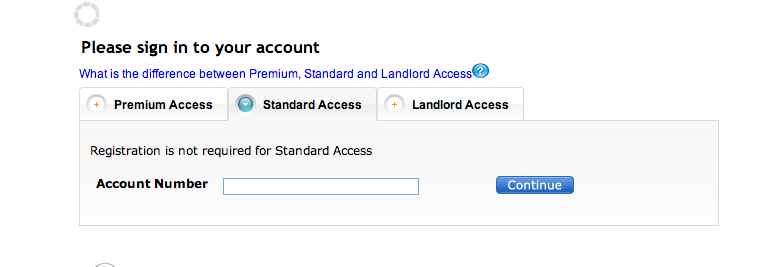

You can help someone in Detroit with their water bill today.
Use Twitter hashtag #DETwaterON to spread the word.
Thank you for taking a look! This is an attempt to match Detroit residents in need of assistance with their past due water bills.
Over 300,000 Detroit residents face water shutoffs due to past due water bills that have
been exacerbated by the city's ongoing economic woes. This project enables you to help a
resident directly by submitting your payment to the Detroit Water and Sewerage Department on their behalf.
The following list of resident accounts has been verified online via the Detroit Water
and Sewerage Department's website as currently being past due. The information is submitted
by the resident or on behalf of a resident needing help and then verified that it is an active
account that is past due. In order to protect residents' privacy names have been added
only where permission is given.
How to help
- Select a resident from the list and note their account number.
- Visit https://billpay.dwsd.org/iwr/user/login.seam and select the Standard Access tab. 
- Enter the account number of the resident and click the Continue button.
- Click the Make Payment button. We ask that you donate the Current Amount due, or the Past Amount
Due. The goal is to get residents' water turned back on. We realize the amount may differ
in the account from what is on the spreadsheet. Information about balance is owed is taken
directly from residents so there may be some inconsistencies.